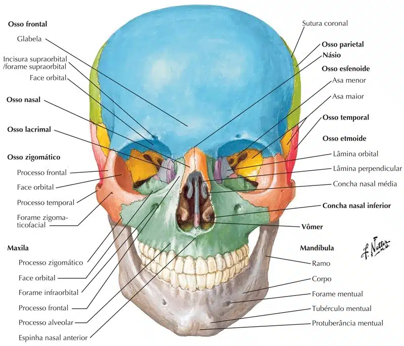
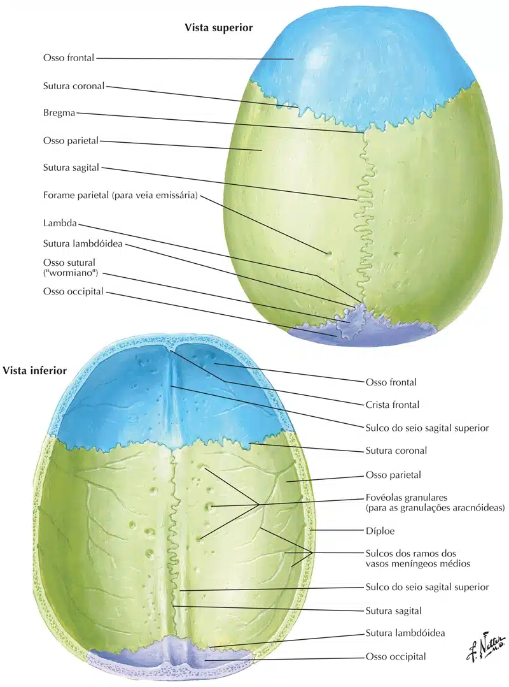
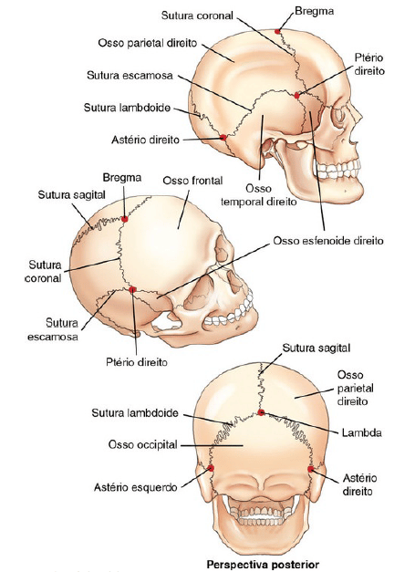

A maioria das articulações do crânio é do tipo fibrosa, apenas uma articulação é sinovial, sendo assim, dos 22 ossos do crânio, apenas um é móvel, a mandíbula.

NETTER: Frank H. Netter Atlas De Anatomia Humana. 7 ed. Rio de Janeiro: Elsevier, 2021.
NETTER: Frank H. Netter Atlas De Anatomia Humana. 7 ed. Rio de Janeiro: Elsevier, 2021.
As articulações, ou juntas, do crânio são denominadas suturas e são classificadas como articulações (sinartroses) fibrosas.
A sutura coronal ou frontal separa o osso frontal dos dois ossos parietais;
A separação entre estes dois ossos na linha média é a sutura sagital.
Na parte posterior, a sutura lambdóidea separa os ossos parietais do osso occipital.
As suturas escamosas são formadas pelos cruzamentos inferiores dos dois ossos parietais com os respectivos ossos temporais.

NETTER: Frank H. Netter Atlas De Anatomia Humana. 7 ed. Rio de Janeiro: Elsevier, 2021.
NETTER: Frank H. Netter Atlas De Anatomia Humana. 7 ed. Rio de Janeiro: Elsevier, 2021.
Cada extremidade do fio da sutura sagital é identificada como um ponto ou área com o nome específico.
A extremidade anterior dessa sutura é denominada bregma;
E a extremidade posterior chama-se lambda;
Os ptérios direito e esquerdo são pontos de junção dos parietais, temporais e asas maiores do esfenoide;
Os astérios direito e esquerdo são pontos posteriores à orelha, onde as suturas escamosa e lambdóidea se encontram.
Tratam-se de seis reconhecidos pontos ósseos usados em cirurgia ou outros casos em que os pontos de referência específicos para medições cranianas são necessários.

BONTRAGER: Kenneth L.; John P. Manual Prático de Técnicas e Posicionamento Radiográfico. 8 ed. Rio de Janeiro: Elsevier, 2015.